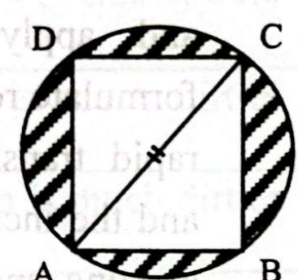

সহকারী পরিচালক (Assistant Director)
Noto Serif Bengali
০১. Write an essay on "50 years of Bangladesh: Achievement and Progress"
Introduction: Bangladesh emerged as an independent nation on 16 December 1971 after a glorious War of Liberation under the visionary leadership of the Father of the Nation Bangabandhu Sheikh Mujibur Rahman. The newborn country inherited a war-ravaged economy, damaged infrastructure, widespread poverty, and monumental social and economic challenges. Many foreign observers doubted whether Bangladesh would survive as an independent state. However, through the resilience, determination, and hard work of its people, Bangladesh has transformed itself into one of the fastest-growing economies in the world over the past five decades.
Economic Growth & Industrial Transformation: One of Bangladesh's greatest achievements has been its impressive economic transformation. From an agrarian subsistence economy, Bangladesh has developed into a dynamic manufacturing and export powerhouse. The ready-made garments (RMG) industry has become the backbone of the economy, making Bangladesh the second-largest apparel exporter globally. Furthermore, pharmaceuticals, leather, jute, ceramics, light engineering, and ICT export services are expanding rapidly. Per capita income has risen manifold and foreign exchange reserves have strengthened significantly.
Agricultural Self-Sufficiency & Food Security: Agriculture remains a vital pillar of the nation's stability. Through modern irrigation, high-yield varieties, mechanization, and agro-research, Bangladesh has achieved remarkable success in tripling rice production, becoming self-sufficient in staple food despite significant population growth and diminishing arable land.
Human Development & Women's Empowerment: Bangladesh has made outstanding strides in human development indicators. Life expectancy has surpassed 72 years, while infant and maternal mortality rates have declined steeply. Female literacy, school enrollment, and gender parity in primary and secondary education are among the highest in South Asia. Microfinance and RMG employment have empowered millions of women, making them direct drivers of economic prosperity.
Infrastructure Megaprojects: Iconic megaprojects have transformed the economic geography of Bangladesh. The self-financed Padma Multipurpose Bridge has connected the underdeveloped southwestern region with the capital, boosting national GDP. The Dhaka Metro Rail, Bangabandhu Tunnel under the Karnaphuli river, Elevated Expressway, Hazrat Shahjalal International Airport's Third Terminal, and the Matarbari Deep Sea Port are propelling Bangladesh into a modern regional connectivity hub.
LDC Graduation & Future Outlook: Bangladesh successfully met all criteria to graduate from the Least Developed Country (LDC) category and is poised for full transition. As the nation marches towards Vision 2041 to build a prosperous, knowledge-based 'Smart Bangladesh', focusing on fourth industrial revolution (4IR) skills, technical vocational education, good governance, and export diversification will ensure sustainable and inclusive growth.
০২. Make sentences by using correct Idioms with proper meaning:
| Idiom / Phrase | Meaning (অর্থ) | Sentence (বাক্য প্রয়োগ) |
|---|---|---|
| a) Black sheep | কুলাঙ্গার / কলঙ্কজনক ব্যক্তি | Manir is the black sheep of the family. |
| b) Two and two makes four | স্বতঃসিদ্ধ সত্য / স্পষ্ট সত্য | He remarked that two and two makes four. |
| c) Turned the corner | সংকটময় অবস্থা কাটিয়ে ওঠা | After weeks of intensive treatment, the patient finally turned the corner last month. |
| d) At the top of the tree | কোনো পেশার সর্বোচ্চ শিখরে পৌঁছানো | Through sheer dedication, Mr. Shafiq reached the top of the tree in the organization. |
| e) Under one's nose | নাকের ডগায় / চোখের সামনেই | The thief stole the wallet right under the police officer's nose. |
০৩. Fill in the blanks with appropriate preposition:
| Sentence | Preposition | বাক্যের অর্থ ও ব্যাখ্যা |
|---|---|---|
| a) Noureen will discuss the issue with Nahar _____ phone. | by (or on) | নওরিন ফোনে নাহারের সাথে বিষয়টি নিয়ে আলোচনা করবে। (phone-এর পূর্বে যোগাযোগ মাধ্যমে 'by phone' বা 'on the phone' বসে)। |
| b) Some writers sink _____ oblivion in course of time. | into | কিছু লেখক কালক্রমে বিস্মৃতির অতলে হারিয়ে যান। (sink into oblivion = বিস্মৃত হওয়া)। |
| c) Bangladesh and India have agreed _____ further strengthen the existing bilateral relationship. | to | বিদ্যমান দ্বিপাক্ষিক সম্পর্ক আরও জোরদার করতে বাংলাদেশ ও ভারত সম্মত হয়েছে। (agree to + verb)। |
| d) He died fighting _____ his country. | for | তিনি দেশের জন্য যুদ্ধ করে শহিদ হয়েছেন। (fight for = কোনো মহৎ উদ্দেশ্যের জন্য যুদ্ধ করা)। |
| e) He acted _____ my instruction. | upon (or on) | তিনি আমার নির্দেশনা অনুযায়ী কাজ করেছিলেন। (act upon/on = অনুসারে কাজ করা)। |
০৪. Choose the correct synonym / antonym:
i) Synonym of 'Sporadic': a) Consistent b) Uniform c) Frequent d) Scattered
ii) Synonym of 'Omnipotent': a) Feeble b) Supreme c) Important d) Vulnerable
iii) Synonym of 'Extempore': a) Planned b) Improvise c) Impromptu d) Immediate
iv) Synonym of 'Improvement': a) Promotion b) Advancement c) Betterment d) Preference
v) Antonym of 'Repeal': a) Abolish b) Enact c) Annul d) Nullify
| শব্দ | সঠিক উত্তর | অর্থ ও ব্যাখ্যা |
|---|---|---|
| i) Sporadic | d) Scattered | Sporadic অর্থ মাঝে-মধ্যে ঘটা, বিক্ষিপ্ত। সমার্থক: Scattered / Irregular। (Consistent = সামঞ্জস্যপূর্ণ; Uniform = সমরূপ; Frequent = ঘন ঘন)। |
| ii) Omnipotent | b) Supreme | Omnipotent অর্থ সর্বশক্তিমান (All-powerful)। সমার্থক: Supreme / Almighty। (Feeble = দুর্বল; Vulnerable = অসুরক্ষিত)। |
| iii) Extempore | c) Impromptu | Extempore (adj) অর্থ পূর্বপ্রস্তুতিহীন, উপস্থিতমত। সমার্থক: Impromptu / Unrehearsed। (Planned = পূর্বপরিকল্পিত)। |
| iv) Improvement | c) Betterment | Improvement অর্থ উন্নতিসাধন বা উৎকৃষ্টতা। সমার্থক: Betterment / Enhancement। |
| v) Repeal (Antonym) | b) Enact | Repeal অর্থ আইন বা চুক্তি বাতিল/রহিত করা (Abolish/Annul/Nullify)। এর সঠিক বিপরীত শব্দ Enact (আইনে পরিণত বা কার্যকর করা)। |
০৫. রচনা লিখুন: "সমৃদ্ধ বাংলাদেশ: প্রবাসী আয়ের ভূমিকা"
ভূমিকা: বাংলাদেশের জাতীয় অর্থনীতি ও সমৃদ্ধির অগ্রযাত্রায় প্রবাসী আয় বা রেমিট্যান্সের ভূমিকা অপরিসীম। দেশের লাখ লাখ প্রবাসী শ্রমিকের ঘামঝরা উপার্জনে প্রেরিত বৈদেশিক মুদ্রা শুধু তাঁদের পরিবারকেই সচ্ছল রাখছে না, বরং সমগ্র জাতির অর্থনৈতিক ভিত্তি ও বৈদেশিক মুদ্রার রিজার্ভকে মজবুত রাখছে। একজন বাংলাদেশি অভিবাসী কর্মী প্রবাস থেকে যে অর্থ ব্যাংকিং ও আনুষ্ঠানিক চ্যানেলে দেশে প্রেরণ করেন, তাই প্রবাসী আয় বলে বিবেচিত হয়। বর্তমানে বাংলাদেশ প্রবাসী আয় অর্জনে বিশ্বে শীর্ষ দশ দেশের অন্যতম এবং দক্ষিণ এশিয়ায় দ্বিতীয় অবস্থানে রয়েছে।
প্রবাসী আয়ের উৎস ও বর্তমান প্রবাহ: সত্তরের দশকে মধ্যপ্রাচ্যে তেলসমৃদ্ধ দেশগুলোর অবকাঠামো উন্নয়নের সময় থেকেই বাংলাদেশি কর্মীদের অভিবাসন শুরু হয়। বর্তমানে সৌদি আরব, সংযুক্ত আরব আমিরাত, কাতার, কুয়েত, ওমান, মালয়েশিয়া, যুক্তরাজ্য, যুক্তরাষ্ট্র এবং ইউরোপের বিভিন্ন দেশে প্রায় দেড় কোটির বেশি বাংলাদেশি প্রবাসী কর্মরত। সাম্প্রতিক বছরগুলোতে বার্ষিক রেমিট্যান্স প্রবাহ প্রায় ২১ থেকে ২৪ বিলিয়ন মার্কিন ডলারের মাইলফলক স্পর্শ করেছে।
সামষ্টিক অর্থনীতি ও ব্যালেন্স অব পেমেন্টসে ভূমিকা: আমদানি ব্যয় মেটানো, বহির্বিশ্বের সাথে লেনদেনের ভারসাম্য (Balance of Payments) রক্ষা এবং টাকার বিনিময় মূল্য স্থিতিশীল রাখতে প্রবাসী আয় অপরিহার্য রক্তপ্রবাহের মতো কাজ করে। রপ্তানি আয়ের সিংহভাগ কাঁচামাল আমদানিতে চলে গেলেও রেমিট্যান্সের প্রায় শতভাগই নিট বৈদেশিক মুদ্রা হিসেবে জাতীয় অর্থনীতিতে সঞ্চিত হয়, যা দেশের সার্বিক সার্বভৌম ক্রেডিট রেটিং বৃদ্ধিতে সহায়তা করে।
দারিদ্র্য বিমোচন ও গ্রামীণ সমৃদ্ধি: গ্রামীণ অর্থনীতিতে রেমিট্যান্স সরাসরি ইতিবাচক বিপ্লব ঘটিয়েছে। প্রবাসীদের প্রেরিত অর্থ গ্রামীণ পরিবারের খাদ্য নিরাপত্তা, উন্নত গৃহনির্মাণ, আধুনিক স্যানিটেশন, উন্নত স্বাস্থ্যসেবা এবং সন্তানদের মানসম্মত শিক্ষার সুযোগ সৃষ্টি করেছে। বহু প্রবাসী পরিবার এই অর্থ দিয়ে ক্ষুদ্র ব্যবসা, কৃষি খামার, পরিবহন ও কুটির শিল্প গড়ে তুলে স্থানীয় পর্যায়ে নতুন কর্মসংস্থান সৃষ্টি করছে। ফলে প্রান্তিক দারিদ্র্য বিমোচনে প্রবাসী আয় এক অনন্য অনুঘটক হিসেবে কাজ করছে।
চ্যালেঞ্জ ও নীতিগত করণীয়: অভিবাসন ব্যয়ের অস্বাভাবিক আধিক্য, মধ্যস্বত্বভোগীদের দৌরাত্ম্য, হুন্ডি চ্যানেলে অর্থ প্রেরণ এবং অদক্ষ শ্রমিকের আধিক্য প্রবাসী আয়ের প্রধান অন্তরায়। প্রবাসীদের দক্ষ জনশক্তিতে রূপান্তর করতে ভোকেশনাল প্রশিক্ষণ, নিরাপদ ও স্বল্পব্যয়ী অভিবাসন নিশ্চিতকরণ, প্রবাসে দূতাবাসের শ্রমকল্যাণ উইং শক্তিশালীকরণ এবং আনুষ্ঠানিক ব্যাংকিং চ্যানেলে রেমিট্যান্স প্রেরণে ঘোষিত সরকারি প্রণোদনা ও ডিজিটাল রেমিট্যান্স সুবিধা তৃণমূল প্রবাসীদের কাছে পৌঁছানো জরুরি।
উপসংহার: প্রবাসীরা দেশের সূর্যসন্তান ও অর্থনীতির অবিসংবাদিত প্রাণশক্তি। সমৃদ্ধ, স্বনির্ভর ও উন্নত বাংলাদেশ বিনির্মাণে প্রবাসী আয়ের টেকসই সুরক্ষায় কার্যকর রাষ্ট্রীয় পৃষ্ঠপোষকতা নিশ্চিত করা সময়ের দাবি।
০৬. অর্থসহ বাক্য রচনা করুন:
| বাগধারা | অর্থ | সার্থক বাক্য রচনা |
|---|---|---|
| a) গোঁফ খেজুরে | নিতান্ত অলস / অকর্মণ্য | গোঁফ খেজুরে লোক দিয়ে জীবনে কোনো দায়িত্বপূর্ণ কাজ উদ্ধার করা সম্ভব নয়। |
| b) রাবণের চিতা | চির অশান্তি / অবিরাম দাহ | একমাত্র সন্তানের অকাল মৃত্যুতে বৃদ্ধ পিতার বুকে যেন আজীবন রাবণের চিতা জ্বলছে। |
| c) ব্যাঙের আধুলি | সামান্য সম্পদ / তুচ্ছ পুঁজিপাটা | সামান্য ব্যাঙের আধুলি সম্বল করে এত বড় ব্যবসায় নামা চরম বোকামি। |
| d) ফপর দালালি | অযাচিত হস্তক্ষেপ / বাড়তি চালবাজি | যে বিষয়ে তোমার কোনো ধারণা নেই, সেখানে ফপর দালালি করতে যাওয়া উচিত নয়। |
| e) তামার বিষ | অর্থের কুপ্রভাব / অহংকার | হঠাৎ কোটিপতি হয়ে লোকটির মধ্যে তামার বিষ ধরেছে, কাউকেই আর মানুষ মনে করছে না। |
০৭. এক কথায় প্রকাশ করুন:
| বাক্য বা বাক্যসংকোচন | এক কথায় প্রকাশ | বিশেষ ব্যাকরণিক টীকা |
|---|---|---|
| a) উপকারীর অপকার করে যে | কৃতঘ্ন | (তুলনীয়: উপকারীর উপকার স্বীকার করে যে = কৃতজ্ঞ; উপকারীর উপকার যে স্বীকার করে না = অকৃতজ্ঞ)। |
| b) নিন্দা করার ইচ্ছা | জুগুপ্সা | (সংস্কৃত সন্-প্রত্যয় সাধিত পদ)। |
| c) যে নারীর পুত্র ও স্বামী জীবিত | বীরা (বা পুরন্ধ্রী) | (তুলনীয়: যে নারীর স্বামী ও পুত্র নেই = অবীরা)। |
| d) বিহায়সে (আকাশে) বিচরণ করে যে | বিহগ (বা বিহঙ্গ) | বিহায়স অর্থ আকাশ; বিহায়স + গ (গম্+ড) = বিহগ (পাখি)। |
| e) জ্যেষ্ঠের অবিবাহিত অবস্থায় কনিষ্ঠের বিয়ে | পরিবেদন | (যিনি বিয়ে করেন তাকে বলা হয় 'পরিবেত্তা')। |
০৮. বাংলায় অনুবাদ করুন:
প্রকাণ্ড ম্যামথ বিলুপ্ত হওয়ার পর হাতিই এখন পৃথিবীর জীবিত স্থলচর প্রাণীদের মধ্যে বৃহত্তম ও সবচেয়ে শক্তিশালী। এটি এক অদ্ভুত দর্শনের প্রাণী—যার রয়েছে মোটা মোটা পা, বিশাল পার্শ্ব ও পশ্চাদ্দেশ, ঝুলন্ত বড় দুটি কান, ছোট লেজ, ক্ষুদ্র চোখ, দীর্ঘ সাদা দাঁত এবং সর্বোপরি শুঁড় নামের একটি লম্বা নাক। শুঁড়ই হাতির সবচেয়ে অনন্য ও অদ্ভুত বৈশিষ্ট্য এবং এটি নানা কাজে ব্যবহৃত হয়। শুঁড় দিয়ে পানি টেনে নিয়ে হাতি তা ঝরনার মতো সারা শরীরে ছিটিয়ে গোসল করতে পারে; আবার শুঁড় দিয়ে গাছের ডাল থেকে পাতা ছিঁড়ে নিজের মুখে তুলে দেয়। প্রকৃতপক্ষে হাতির শুঁড়টি তার দীর্ঘ বাহু ও হাতের মতো কাজ করে। হাতিকে দেখতে অত্যন্ত স্থূল ও ভারী মনে হলেও, ইচ্ছামাফিক তারা অত্যন্ত দ্রুত গতিতে চলাফেরা করতে পারে।
০৯. কোনো ভগ্নাংশের লবের সাথে \(1\) যোগ করলে \(\frac{1}{2}\) হয় এবং হরের সাথে \(1\) যোগ করলে তা \(\frac{1}{3}\) হয়, ভগ্নাংশটি কত?
সমাধান:
ধরি, ভগ্নাংশটি \(\frac{x}{y}\) (যেখানে \(x\) লব এবং \(y\) হর)।
প্রথম শর্তমতে,
\(\frac{x + 1}{y} = \frac{1}{2}\)
⇒ \(2(x + 1) = y\)
⇒ \(2x + 2 = y\) ... (i)
দ্বিতীয় শর্তমতে,
\(\frac{x}{y + 1} = \frac{1}{3}\)
⇒ \(3x = y + 1\) ... (ii)
সমীকরণ (i) থেকে \(y\)-এর মান সমীকরণ (ii)-তে বসিয়ে পাই:
\(3x = (2x + 2) + 1\)
⇒ \(3x = 2x + 3\)
⇒ \(3x - 2x = 3\)
∴ \(x = 3\)
এখন সমীকরণ (i)-এ \(x = 3\) বসিয়ে পাই:
\(y = 2(3) + 2 = 6 + 2 = 8\)
∴ নির্ণেয় ভগ্নাংশটি = \(\frac{৩}{৮}\)
উত্তর: \(\frac{৩}{৮}\)
১০. একটি আয়তক্ষেত্রের কর্ণের দৈর্ঘ্য \(10\) মিটার। ইহার বাহুদ্বয়ের যোগফল ও বিয়োগফলের সমান দৈর্ঘ্য বিশিষ্ট বাহুদ্বয় দ্বারা অঙ্কিত আয়তক্ষেত্রের ক্ষেত্রফল \(28\) বর্গমিটার হলে প্রথম আয়তক্ষেত্রটির দৈর্ঘ্য ও প্রস্থ নির্ণয় করুন।
সমাধান:
ধরি, প্রথম আয়তক্ষেত্রের দৈর্ঘ্য \(x\) মিটার এবং প্রস্থ \(y\) মিটার (\(x > y\))।
আমরা জানি, আয়তক্ষেত্রের কর্ণের দৈর্ঘ্য \(= \sqrt{x^2 + y^2}\)
প্রথম শর্তমতে,
\(\sqrt{x^2 + y^2} = 10\)
বর্গ করে পাই, \(x^2 + y^2 = 100\) ... (i)
আবার, দ্বিতীয় আয়তক্ষেত্রের বাহুদ্বয় যথাক্রমে \((x + y)\) ও \((x - y)\) মিটার।
দ্বিতীয় শর্তমতে,
\((x + y)(x - y) = 28\)
⇒ \(x^2 - y^2 = 28\) ... (ii)
সমীকরণ (i) ও সমীকরণ (ii) যোগ করে পাই:
\((x^2 + y^2) + (x^2 - y^2) = 100 + 28\)
⇒ \(2x^2 = 128\)
⇒ \(x^2 = \frac{128}{2} = 64\)
⇒ \(x = \sqrt{64} = 8\) মিটার।
সমীকরণ (i)-এ \(x^2 = 64\) বসিয়ে পাই:
\(64 + y^2 = 100\)
⇒ \(y^2 = 100 - 64 = 36\)
⇒ \(y = \sqrt{36} = 6\) মিটার।
∴ প্রথম আয়তক্ষেত্রের দৈর্ঘ্য ৮ মিটার এবং প্রস্থ ৬ মিটার।
উত্তর: দৈর্ঘ্য ৮ মিটার এবং প্রস্থ ৬ মিটার
১১. একটি গ্রামের মোট জনসংখ্যার ৯ ভাগের ৫ ভাগ পুরুষ। যদি পুরুষের ৩০% বিবাহিত হয় তাহলে মোট জনসংখ্যার শতকরা কতজন নারী অবিবাহিত?
সমাধান:
হিসাবের সুবিধার্থে ধরি, গ্রামের মোট জনসংখ্যা \(= ৯০\) জন।
গ্রামের মোট পুরুষের সংখ্যা \(= ৯০ \times \frac{৫}{৯} = ৫০\) জন।
গ্রামের মোট নারীর সংখ্যা \(= ৯০ - ৫০ = ৪০\) জন।
বিবাহিত পুরুষের সংখ্যা \(= ৫০ \times ৩০\% = \frac{৫০ \times ৩০}{১০০} = ১৫\) জন।
যেহেতু সমাজে একজন বিবাহিত পুরুষের বিপরীতে একজন বিবাহিত নারী থাকেন,
∴ বিবাহিত নারীর সংখ্যা \(= ১৫\) জন।
∴ অবিবাহিত নারীর সংখ্যা \(= ৪০ - ১৫ = ২৫\) জন।
অতএব, মোট জনসংখ্যার শতকরা অবিবাহিত নারী:
\(= \frac{২৫}{৯০} \times ১০০\% = \frac{২৫০}{৯}\% = ২৭\frac{৭}{৯}\%\)
উত্তর: \(২৭\frac{৭}{৯}\%\)
১২. সমাধান করুন (ক ও খ অংশ):
a) যদি \(x^a = y^b = z^c\) এবং \(xyz = 1\) হয় তবে \(ab + bc + ca\) এর মান নির্ণয় করুন।
b) ২ সেন্টিমিটার ব্যাসার্ধ বিশিষ্ট একটি বৃত্তের অভ্যন্তরে একটি বর্গক্ষেত্রের চারটি বাহু এবং বৃত্তটি দ্বারা আবদ্ধ অংশের ক্ষেত্রফল কত?
ধরি, \(x^a = y^b = z^c = k\)
⇒ \(x = k^{\frac{1}{a}}\), \(y = k^{\frac{1}{b}}\), \(z = k^{\frac{1}{c}}\)
দেওয়া আছে, \(xyz = 1\)
⇒ \(k^{\frac{1}{a}} \times k^{\frac{1}{b}} \times k^{\frac{1}{c}} = 1\)
⇒ \(k^{\frac{1}{a} + \frac{1}{b} + \frac{1}{c}} = k^0\)
⇒ \(\frac{1}{a} + \frac{1}{b} + \frac{1}{c} = 0\)
⇒ \(\frac{bc + ca + ab}{abc} = 0\)
∴ \(ab + bc + ca = 0\)
উত্তর (a): ০

দেওয়া আছে, বৃত্তের ব্যাসার্ধ \(r = 2\text{ cm}\)
∴ বৃত্তের ক্ষেত্রফল \(= \pi r^2 = \pi (2)^2 = 4\pi\text{ cm}^2\)
যেহেতু বর্গক্ষেত্রটি বৃত্তের অভ্যন্তরে অন্তর্লিখিত, তাই বর্গক্ষেত্রের কর্ণ \(AC\) হবে বৃত্তটির ব্যাস।
কর্ণ \(AC = 2r = 2 \times 2 = 4\text{ cm}\)
ধরি, বর্গক্ষেত্রের প্রতিটি বাহুর দৈর্ঘ্য \(= s\)
পিথাগোরাসের সূত্রানুযায়ী, \(\Delta ABC\)-এ:
\(s^2 + s^2 = AC^2\)
⇒ \(2s^2 = 4^2 = 16\)
⇒ \(s^2 = \frac{16}{2} = 8\text{ cm}^2\)
অর্থাৎ অন্তর্লিখিত বর্গক্ষেত্রের ক্ষেত্রফল \(= 8\text{ cm}^2\)
অতএব, বর্গক্ষেত্রের চারটি বাহু এবং বৃত্ত দ্বারা আবদ্ধ ছায়াঘেরা অংশের মোট ক্ষেত্রফল:
\(= \text{বৃত্তের ক্ষেত্রফল} - \text{বর্গক্ষেত্রের ক্ষেত্রফল} = (4\pi - 8)\text{ cm}^2\)
উত্তর (b): \((4\pi - 8)\text{ cm}^2\) (বা প্রায় \(৪.৫৬৬\) বর্গ সেমি)
১৩. সংক্ষিপ্ত উত্তর দিন (১৫টি সাধারণ জ্ঞান প্রশ্নোত্তর):
| নং | প্রশ্ন | সঠিক উত্তর ও প্রামাণ্য তথ্য |
|---|---|---|
| a | বিশ্ব গণহত্যা দিবস পালিত হয় কবে | ৯ ডিসেম্বর (১৯৪৮ সালে জাতিসংঘের জেনোসাইড কনভেনশন গৃহীত হওয়ার স্মরণে প্রতিবছর ৯ ডিসেম্বর পালিত হয়) |
| b | ১৯৫৪ সালে যুক্তফ্রন্ট মন্ত্রিসভার মুখ্যমন্ত্রী কে ছিলেন | এ. কে. ফজলুল হক (শেরে বাংলা) |
| c | শরৎচন্দ্রের 'পথের দাবী' উপন্যাসের কেন্দ্রীয় চরিত্র | মূল বৈপ্লবিক চরিত্র ডাক্তার সব্যসাচী এবং কেন্দ্রীয় নারী চরিত্র ভারতী |
| d | 'কান্তজীর মন্দির' কোন উপজেলায় অবস্থিত | দিনাজপুর জেলার কাহারোল উপজেলায় (ঢেঁপা নদীর তীরে অবস্থিত ১৭৫২ সালে নির্মিত নবরত্ন মন্দির) |
| e | সংবিধানে নারী ও পুরুষের সমতার অনুচ্ছেদ | অনুচ্ছেদ ২৮(২) ("রাষ্ট্র ও গণজীবনের সর্বস্তরে নারী পুরুষের সমান অধিকার লাভ করিবেন") |
| f | সোয়াজিল্যান্ড কোন মহাদেশে অবস্থিত | আফ্রিকা মহাদেশে (দেশটির বর্তমান পরিবর্তিত সরকারি নাম কিংডম অব এসওয়াতিনি) |
| g | 'চিকেন নেক' স্থানটি কোথায় অবস্থিত | ভারতের শিলিগুড়ি করিডোর (পশ্চিমবঙ্গের উত্তরাংশে অবস্থিত ভারতের মূল ভূখণ্ডের সাথে উত্তর-পূর্বাঞ্চলীয় ৭টি অঙ্গরাজ্যের সংযোগকারী সংকীর্ণ করিডোর) |
| h | ১৯৭১ সালে জাতিসংঘের মহাসচিব কোন দেশের ছিলেন | মিয়ানমারের নাগরিক উ থান্ট (U Thant, যিনি ১৯৬১-১৯৭১ পর্যন্ত মহাসচিবের দায়িত্ব পালন করেন) |
| i | 'সাঁঝের মায়া' কাব্যগ্রন্থ কার রচিত | কবি সুফিয়া কামাল (প্রকাশিত ১৯৩৮, মুখবন্ধ লিখেছিলেন কাজী নজরুল ইসলাম) |
| j | বার্ষিক আর্থিক বিবৃতি (বাজেট) সংবিধানের কত অনুচ্ছেদ | অনুচ্ছেদ ৮৭(১) |
| k | বঙ্গভঙ্গ রদ কত সালে হয় | ১৯১১ সালে (১২ ডিসেম্বর দিল্লির রাজকীয় দরবারে সম্রাট ৫ম জর্জ ঘোষণা দেন) |
| l | রবীন্দ্রনাথ ঠাকুর কেন নাইট উপাধি ত্যাগ করেন | ১৯১৯ সালের ১৩ এপ্রিল অমৃতসরের জালিয়ানওয়ালাবাগ হত্যাকাণ্ডের প্রতিবাদে |
| m | পানি বিশুদ্ধকরণে পিএসএফ (PSF) কী | Pond Sand Filter (বালির ফিল্টারের মাধ্যমে উপকূলীয় অঞ্চলের পুকুরের পানি বিশুদ্ধ ও ব্যাকটেরিয়ামুক্ত করার পরিবেশবান্ধব গ্রামীণ প্রযুক্তি) |
| n | ভারতীয় লোকসভার মোট আসন সংখ্যা কত | সংবিধান অনুযায়ী সর্বোচ্চ ৫৫২টি (বর্তমানে কার্যকর আসন সংখ্যা ৫৪৩টি) |
| o | ১৯৭৪ সালে জাতীয় সংসদে সংরক্ষিত নারী আসন কত ছিল | ১৫টি (১৯৭২ সালের মূল সংবিধানে ১০ বছরের জন্য ১৫টি সংরক্ষিত নারী আসনের বিধান ছিল) |